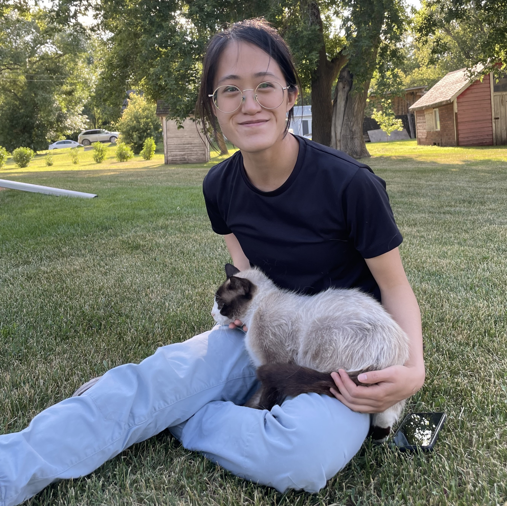

About
Hello! I'm Gale. I use they/them pronouns. I'm a course coordinator at the University of British Columbia and a sexual health educator at Vancouver Coastal Health. I have 5+ years of exeperience in highschool and university level education, and 2+ years of experience programming for life sciences data analysis. My professional interests lie in education, mental health care, and the intersection of computing and genderdiverse & neurodiverse experiences. I hope that my work can bridge these interests, and I am always looking for interdisciplinary opportunities related to these domains!
Outside of work, I dabble in many outdoor activies. I can be found rock climbing, swimming, hiking, and trying to ski. When stuck indoors, I like to watch anime, journal/scrapbook and draw. I have also recently picked up very basic leatherworking, with a particular interest in cordwaining.
Resume
Download full PDF.Education
B.Sc. Cognitive Systems (Cognition and Brain)
University of British Columbia, Vancouver, Canada
May 2023
Graduation with distinction
Dean's Honour List (2018/19, 2020/21)
Work
Course Coordinator - Department of Computer Science
University of British Columbia, Vancouver, Canada
May 2023 - present
Undergraduate Teaching Assistant
University of British Columbia, Vancouver, Canada
Jan 2022 - Apr 2023
Open Science Specialist
University of British Columbia, Vancouver, Canada
May - Sep 2022
Bioinformatics Research Assistant
Agriculture and Agri-Food Canada, Lethbridge, Canada
Jun - Dec 2020, Sep - Dec 2021
Research Projects
Evaluating Emotion Preservation in Attribute-Preserving De-Identification
Python | Sep – Dec 2022
Research Proposal: Ideological Roles of Gender Non-Conforming Identities in Anime
Apr 2020
Emergent Pathfinding in Pedestrian Traffic on University Campus
Java | Sep - Dec 2019
Volunteering
Sexual Health Educator
Vancouver Coastal Health, Vancouver, Canada
2018-present
Receptionist
PACE Society, BC, Canada
2017
Contact Me
Let's connect!
send me a message! :-)